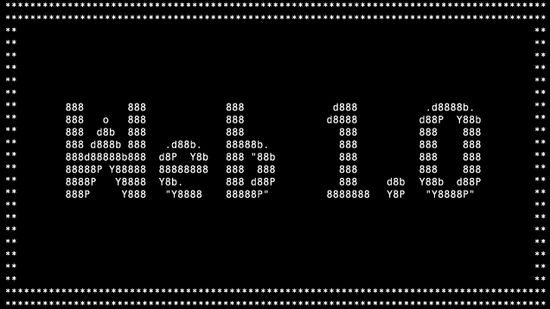

| EVOLUCIÓN DE LAS APLICACIÓNES WEB |
| HITOS | HECHOS | IMAGENES | REFERENCIAS |
| Internet |
- primera etapa en la World Wide Web;
- es móvil: Internet puede ser consultado en cualquier dispositivo en movimiento.
- es Interactivo: Cualquier clic genera una respuesta. Esta interactividad genera un rastro.
- es Automático: se automatizan los análisis y es envío de datos.
| |

|
- ebschool. (2019). ebschool. Obtenido de https://www.iebschool.com/blog/web-3-0-que-es-
- tecnologia/
- estudioseijo. (2019). estudioseijo. Obtenido de estudioseijo.
- http://www.estudioseijo.com/noticias/web-10-web-20-y-web-30.html
- paradigmadigital. (2012). paradigmadigital. Obtenido de paradigmadigital:
- https://www.paradigmadigital.com/dev/web-4-0/
- scielo. (2020). Obtenido de scielo:
- https://www.scielo.org.mx/scielo.php?script=sci_arttext&pid=S0185-19182011000200004
|
| Web 1.0 |
- Páginas estáticas en vez de dinámicas por el usuario que la visita
- Extensiones propias del HTML como "blink>"" y "marquee"
- Botones GIF
- Todas sus páginas se creaban de forma fija y muy pocas veces se actualizaban.
|  |
 |
| Web 2.0 |
- usuarios pueden proporcionar los datos y ejercer cierto control sobre lo que comparten en un sitio web 2.0.
- webs creadas por los usuarios, usando plataformas de auto-edición.
- las plataformas de autopublicación.
- servicios de redes sociales
- |  |
 |
| Web 3.0 |
- Se centra en el análisis de los datos y en su comprensión
- Hace referencia a un tipo de tecnología que hace posible la construcción de servicios online semánticos y descentralizados.
- Aprovecha la tecnología blockchain y las redes P2P para asegurar una mayor privacidad y seguridad
- Inteligencia Artificial y Aprendizaje Automático.
|
 |
|
| Web 4.0 |
- ¿que es?
- es una capa de integración necesaria para la explotación de la Web semántica y sus enormes posibilidades.
- Nuevos modelos de comunicación máquina-máquina (M2M).
- La red estará formada por agentes inteligentes en la nube
- Uso de información de contexto del usuario.
- Sentiment analysis, geolocalización, sensores…
|
 |
|